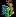
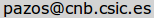

). Note that, since selections are cumulative, "unselecting" is a very common operation in JDet. For this reason, it is recommended to perform it with the button in the tool-bar, instead of the menu.
). Note that, since selections are cumulative, "unselecting" is a very common operation in JDet. For this reason, it is recommended to perform it with the button in the tool-bar, instead of the menu.
JDet (http://csbg.cnb.csic.es/JDet) is a multiplatform software for the interactive calculation and visualization of function-related conservation patterns in multiple sequence alignments and structures. It contains the set of tools and features we consider critical for the daily work with this kind of data, and that previously were disseminated in different packages and web servers. The package also includes two of our recently developed programs for extracting this kind of information from protein alignments.
JDet is a open-source project. The code is available and you are welcome to modify it and contribute to the project. JDet can also be extended by writing "plugins" implementing other methods for extracting functional positions from alignments or filters for parsing the results of other programs. More information available at http://csbg.cnb.csic.es/JDet.
For a general description of the package and the biological problem which prompted its development, as well as more information on multiple sequence alignments (MSAs), conserved positions, specificity determining positions (SDPs), etc., please take a look at the following article: Muth et al. (2012). Bioinformatics 28 (4): 584-586.; and the references cited there, specially Pazos et al. (2006) Bioinformatics. 22(12):1440-1448 and Rausell et al. (2010) PNAS. 107(5)1995-2000.
If you are new to JDet, this guided tutorial might help you in getting familiar with the basic functioning of the program.
Requirements:
The basic input for the program is a multiple sequence alignment (MSA) of proteins. Just drag the MSA file into JDet's main window. Alternatively, you can use "File -> Load alignment" or the corresponding button in the button bar () to load it. The program accepts PIR and multiple-fasta formats. Proteins are arranged in rows and the columns represent equivalent positions between these proteins.
The results of the programs for detecting conserved positions and SDPs totally depend on the quality of the MSA used as input. The program allows to do some basic filtering of the loaded MSA, although the user is encouraged to carefully inspect/change his/her alignment depending on the source it comes from. Use "File -> Filter alignment" or the corresponding button of the bar () and select the filtering parameters in the dialog box. These parameters are: i) The lower percentage of sequence identity (%ID) allowed with the master sequence (the first sequence of the alignment). Proteins with a %ID lower than the selected threshold will be removed. This allows to discard distant/divergent sequences. ii) The higher %ID allowed between any pair of proteins. If two proteins have a %ID higher than this threshold, the second one is removed. This allows to remove redundancy in the alignment. iii) Minimum coverage respect to the master sequence. Proteins aligning less than this percentage of residues of the master sequence are removed. This is intended to remove fragments from the MSA. iv) Positions (columns) in the alignment for which the master sequence does not have an equivalent residue (i.e. there is a gap there) can be removed with this option. The user can change these parameters freely or select sets of parameters found useful for different programs/situations. JDet contains two sets of parameters for the two programs included in the installation (Xdet and S3Det) but the user can add more sets by editing the conf/filterPresets.dat file.
The alignment can be edited to change the relative disposition between sequences. Although normally multiple sequence alignment programs produce acurate alignments, in some particular cases (repetitions, composition-biased segments, ...) portions of the alignment can be wrong and the correction being evident. JDet implements two operations for editing the alignment which allow to make virtually any modification. Gaps can be inserted for the selected sequences in the currently selected position (see below for sequence/position selection) with the button. Gaps are inserted on the right of the selected position. On the other hand, gaps or aminoacids on the left of the selected position can be removed with the button. Note that removing aminoacids in a set of sequences is equivalent to introducing gaps in the complementary set, which is actually what you see in the interface. Note also that columns created during edition without aminoacids (all gap) are removed on the flight. This can cause aparent strange behaviours (e.g. we go on introducing gaps but the alignment remains the same).
The modified alignment (filtered and/or edited) can be saved with "File -> Save alignment" or the corresponding button ().
Aminoacids in the MSA can be colored according with different schemas using the "Color" menu. Apart from the four schemas included, the user can import any other schema with the "Color -> User defined" option. The input for this option is a file associating a numerical value (e.g a physico-chemical property) to each of the 20 aminoacid. Examples of such files can be found in the examples/colors/ directory of the installation. The aminoacids are colored by associating a color scale to the range of numerical values. Two different color scales can be selected in the "Color" menu: RGB (from red -low values- to green -medium values- to blue -high values-) or RB (from red -low values- to blue -high values-). The selected scale is shown in the bottom-left corner of the window, indicating the minimum and maximum value.
Proteins, positions, or particular aminoacids within the positions can be selected in order to perform different operations with them (explained below). To select a set of proteins simply click their IDs. A continuous range of proteins can be selected by dragging a box (not displayed) touching their IDs. To select entire positions (columns) of the MSA click in the corresponding column numbers (blue panel). To select a particular aminoacid within a column simply click on any instance of it in the column. Selections are always cumulative. To remove from the selection an already selected protein, column or aminoacid, simply click it again. To completely clear the current selection of proteins or positions/aminoacids use the corresponding options in the "Selection" menu or the equivalent buttons of the bar ( ). Note that, since selections are cumulative, "unselecting" is a very common operation in JDet. For this reason, it is recommended to perform it with the button in the tool-bar, instead of the menu.
Some operations in JDet affect only the LAST position selected, for example inserting/deleting gaps/aminoacids (see Editing the alignment above). That position is marked with a vertical arrow close to the position number.
The "subalignment" defined by the current selection of proteins and positions can be shown in a separated window or exported to a FASTA file with the corresponding options of the "Selection" menu or the buttons in the bar ( ).
).
The current representation shown in the alignment window (with the current color schema, the currently highlighted selected protein and positions, etc) can be exported to a PNG image file with "File -> export PNG file" or the corresponding button ().
If the structure of any protein in the MSA (or a close homolog) is known, it can be shown and manipulated in the included Jmol viewer (http://www.jmol.org). This can be done with "File -> Load structure" or the corresponding button in the bar (). A dialog appear where the user has to select to which sequence of the alignment the structure corresponds to. Then, either the program automatically looks for a suitable structure for that sequence ("Look for suitable structure for" button) or the user "force" the program to use a given structure. In the first case, a BLAST search against the PDB database (http://www.rcsb.org) is performed and the first hit is suggested to the user, showing the BLAST scores of the hit in the "Status" line and filling in the "PDB-code" and "chain" fields of the dialog. (A maximun e-value of 10-4 and a %ID of 25% is required for the hit to be considered). In the second case, the user can provide his/her own PDB code and chain (whose estructure is then retrieved with the "Load from server" button) or even load a local PDB file ("Browse"). Once the structure has been retrieved, press the "Load" button to incorporate it in the Jmol viewer. A perfect match between the sequence of the loaded structure and that selected in the alignment is not required. The program aligns both sequences with a simple heuristic method to find the best correspondence between their positions. This allows to load structures of close homologs, as well as those of fragments or longer versions of the sequence of interest. A window pops-up with the alignment found by the program between the sequence in the PDB file and that in the alignment, indicating the matching residues as well as the percentages of identity, in order for the user to check it before going on. Note that the alignment method used is not exhaustive (e.g. Smith-Waterman or similar) and hence it is intended only for cases of very high similarity (Actually, the only ones for which it would make sense to load a structure in this context).
In the Jmol window, the selected chain is shown in ribbon representation, the heteroatoms (prostetic groups, ligands, etc) in spacefill and colored yellow, and the other chains of the PDB file with thin backbone. This window contains also a text-box to execute Jmol/Rasmol commands. Take a look at the Jmol documentation (http://jmol.sourceforge.net/docs/) for information on how to manipulate the structure as well as on Jmol/Rasmol commands.
Residues in the 3D structure can be selected by clicking on them. These are highlighted in green in the structure and the corresponding positions are also selected in the MSA window. And in the other way around: selections (and de-selections) in the MSA (see above) are translated to the 3D structure. The Jmol/Rasmol commands (see above) affect the current selection only. For example, if a set of positions is selected in the MSA window (and consequently highlighted in green in the 3D structure) and the following command is typed in the Jmol window: spacefill; color red the result is the set of selected residues to become red and "spacefilled". For the commands to affect not only the current selection but the whole chain or PDB file these have to be previously selected in Jmol; for example: select all; spacefill; color red or select *A; spacefill; color red respectively.
JDet was designed as a platform for integrating and visualizing the results of different programs/methods for detecting conservation patterns in MSA's related to functionality (basically conservation and SDP's -see reference above-). The basic result of one of these programs is a set of positions of the MSA (predicted to have some functional importance) and eventually numerical scores associated to them. Right now the program can read the results of two recently developed methods: Xdet (Pazos et al. (2006) Bioinformatics. 22(12):1440-1448; http://pdg.cnb.csic.es/pazos/Xdet/) and S3Det (Rausell et al. (2010) PNAS. 107(5)1995-2000) and a generic format ("user defined") which opens the possibility of importing the results of any other program by converting it to this simple format. A simple description of this format appears in the dialog box when using this option, and an example can be found in the examples/userdef.txt file. JDet can read the results of the "supervised" and "unsupervised" versions of Xdet and S3Det since the file format is the same. See "Running the included programs" below for more information on supervised/unsupervised. The results for Xdet, S3Det and "userdef" can be loaded with the "File -> Load method result ->" menu items or the corresponding buttons (
 ). Xdet and S3Det files can also be imported just by draging them into a JDet window where the corresponding alignment is already loaded. For this to work, the files have to have a given extension in order for the program to recognize them (.Xdet and .S3det).
). Xdet and S3Det files can also be imported just by draging them into a JDet window where the corresponding alignment is already loaded. For this to work, the files have to have a given extension in order for the program to recognize them (.Xdet and .S3det).
Additionally, filters for parsing the results of other programs/methods can be added to JDet as plugins (see the Plugins section below).
The results of an unlimited number of methods can be loaded simultaneously. These are piled up above the alignment. For each method loaded, the following items are shown: the name of the method (the file names for "user defined" or the plugin name), a text box and a slider bar to control the method's threshold (see below), two buttons (  ) to perform selections according with the method's results (see below), and green circles highlighting the positions reported by that method with scores above the selected threshold. The results of Xdet appear as two different methods: Xdet and Entropy (a measure of conservation) since the results file of this program contains both types of data. Moving the slider bar changes the set of positions shown for that method (green circles) in real time. This allows to explore more permissive or restrictive cutoffs of the method.
) to perform selections according with the method's results (see below), and green circles highlighting the positions reported by that method with scores above the selected threshold. The results of Xdet appear as two different methods: Xdet and Entropy (a measure of conservation) since the results file of this program contains both types of data. Moving the slider bar changes the set of positions shown for that method (green circles) in real time. This allows to explore more permissive or restrictive cutoffs of the method.
Note that with "user defined" we can not only import the result of any other program, but also any arbitrary set of positions we are interested in. This allows a number of useful tricks, e.g. to load a set of experimentally determined functional positions and evaluate its agreement (or closeness in a 3D structure) with a set of predictions, etc.
The positions currently shown for a given method (i.e. above the selected threshold) can be selected in a single shot by clicking the  button for that method, or with the "Selection -> selection from method ->" menu items. For selecting the positions reported concomitantly by more than one method (i.e. to search for consensus/stable results) click on the button for one of the methods, and the button for the others. So the button works as a sort of "AND" selection criteria. These "method-based" selections behave the same as any other selection (i.e. they are highlighted in the 3D structure if available, etc.) Note that many of the operations with selections explained in the previous sections acquire more sense for these method-based selections (e.g. to inspect in a separate window the sequence characteristics of positions predicted by a method, their characteristics in the 3D structure, etc.)
button for that method, or with the "Selection -> selection from method ->" menu items. For selecting the positions reported concomitantly by more than one method (i.e. to search for consensus/stable results) click on the button for one of the methods, and the button for the others. So the button works as a sort of "AND" selection criteria. These "method-based" selections behave the same as any other selection (i.e. they are highlighted in the 3D structure if available, etc.) Note that many of the operations with selections explained in the previous sections acquire more sense for these method-based selections (e.g. to inspect in a separate window the sequence characteristics of positions predicted by a method, their characteristics in the 3D structure, etc.)
Apart from loading files with results previously generated by Xdet and S3Det, the package includes versions of these programs for different operative systems and hence they can be run from within JDet for the alignment currently loaded, and the results automatically imported. Additionally, other methods can be incorporated into JDet as plugins (see the Plugins section below)
Xdet and S3Detcan be run with the "File -> Run method ->" menu items or with the corresponding buttons in the tool-bar (
 ). In the dialog box which pops up, the user can modify the parameters of the command line that will be used for running the programs (i.e. adding or removing options). Take a look at the documentation of these programs (included with the distribution: files programs/Xdet_README.txt and programs/S3det_v2.2_readme.txt) for information on the parameters of the command line, etc.
). In the dialog box which pops up, the user can modify the parameters of the command line that will be used for running the programs (i.e. adding or removing options). Take a look at the documentation of these programs (included with the distribution: files programs/Xdet_README.txt and programs/S3det_v2.2_readme.txt) for information on the parameters of the command line, etc.
Changing these command-line parameters allows, for example, to run these programs in "unsupervised" or "supervised" mode. Basically, in "unsupervised" mode the programs assume that the functional classification is that implicitly contained in the sequence relationships of the alignment, that is, the functional groups match the sequence groups. In "supervised" mode, this assumption is not done and the programs use functional classifications provided by the user. Further information regarding the supervised/approaches for detecting SDPs can be found in the documentation of these two programs (above) as well as in Pazos et al. (2006) Bioinformatics. 22(12):1440-1448. To run the programs in "supervised" mode, the following parameters have to be added to the command lines in the dialog boxes: -M=file_xdet.func for Xdet, and -f file_s3det.func for S3Det. These text files contain the functional classifications the programs are forced to use, in the form of quantitative "functional similarities" between proteins in the case of Xdet, and information on membership of proteins to classes in the case of S3Det. Take a look at the documentation of these programs (files programs/Xdet_README.txt and programs/S3det_v2.2_readme.txt) for an exhaustive description of the formats of these files. Note: S3Det allows "fuzzy" assignment of proteins to classes (a protein can be assigned to more than one functional group with different probabilities). Since that feature can not be implemented in the visualization schema used, S3Det results files coming from "fuzzy" asignments are not allowed in JDet.
The default command lines suggested in the dialog are for "unsupervised" runs with typical parameters.
These results generated "on-the-fly" by running the programs from within JDet can be saved to files for future uses and for avoiding running the programs again for the same alignment. This can be done with the "File -> Save method results ->" menu items or the corresponding buttons (  ).
).
Other methods for detecting important positions in multiple sequence alignments can be incorporated into JDet with a system of plugins. There are two types of plugins: filters (the plugin allows JDet to parse files with the results of other methods), and methods (the plugin contains the method itself).
Plugins are distributed as .jar files and the way of "installing" them is just to put them into the plugins/conversion/ and plugins/method/ folders respectively. The next time JDet is started, new items will appear in the"File->Run Method->Plugins->" and "File->Load Method Results->Plugins->" submenus for accessing these new functionalities. This is all a user needs to know about plugins. For developers: JDet's plugins are coded in Java. Writing your filter or method in Java following a set of simple directives allows it to be incorporated into JDet as a plugin. The following link contains detailed information on how to develop plugins as well as example code, etc: http://csbg.cnb.csic.es/JDet/util/JDet-plugin-samples.zip. If you develop a plugin, please let us know so that we can maintain a repository with all plugins developed. See the contact section below.
The distributed version of JDet contains a filter-plugin for parsing results from the widely used programs for detecting functional sites in multiple sequence alignments and estructures Conseq/Consurf.
The results of S3Det contain information not only on the positions predicted to be SDPs but also on the subfamily composition of the MSA as well. This subfamily partition is automatically calculated by S3Det when run in "unsupervised" mode, or is that used as input when the "supervised" mode is used (see previous point). S3Det uses a sophisticated and elegant vectorial representation of proteins and residues in order to detect subfamilies and their associated SDPs (Rausell et al. (2010) PNAS. 107(5)1995-2000). These vectorial representations contain a lot of information on the sequence divergence accumulated in the family. Apart from being exploited to obtain a final set of predicted SDPs and subfamilies, these spaces allow to further investigate the internal organization of the proteins in the family as well as the sets of residues responsible of such a segregation. Manually inspecting these vectorial spaces can provide additional important information, e.g. other possible subfamily partitions or SDPs nor reported automatically due to the threshold used. To this end, JDet incorporates specific tools for working with the subfamilies and sequence spaces reported by S3Det, that are explained here:
When a file with S3Det results is loaded, or S3Det is run, the proteins in the MSA are automatically grouped and colored according with the subfamily classification.
A window with the "sequence spaces" can be opened with "File -> show sequence spaces" or the corresponding button ( ). S3Det represents each protein and each residue in a given alignment position as a vector in a high dimensional space. 3D projections of that space are shown in this window, separating the vectors of the proteins (left) and those of the residues (right). The user can rotate these spaces with the mouse. The rotation is coordinated since relating the "spatial positions" of proteins and residues is indeed the basis of the methodology for detecting SDPs associated to subfamilies. The user can choose which particular set of three axis of the multidimensional space to shown in the projections. Axis are sorted by their information content, and hence usually the first three axis (1st, 2nd and 3rd) are those in which the subfamily partition of the MSA is more evident. Nevertheless, other axis can contain information on deeper levels of subfamily divisions. In this representation, proteins (dots) are colored according with their subfamily assignment, as in the MSA. In the residue space, the centers of the family clusters are colored in the same way, and the black dots represent the centers of "multifamily" clusters (e.g. the cluster formed by subfamilies A+B, A+C, etc.)
). S3Det represents each protein and each residue in a given alignment position as a vector in a high dimensional space. 3D projections of that space are shown in this window, separating the vectors of the proteins (left) and those of the residues (right). The user can rotate these spaces with the mouse. The rotation is coordinated since relating the "spatial positions" of proteins and residues is indeed the basis of the methodology for detecting SDPs associated to subfamilies. The user can choose which particular set of three axis of the multidimensional space to shown in the projections. Axis are sorted by their information content, and hence usually the first three axis (1st, 2nd and 3rd) are those in which the subfamily partition of the MSA is more evident. Nevertheless, other axis can contain information on deeper levels of subfamily divisions. In this representation, proteins (dots) are colored according with their subfamily assignment, as in the MSA. In the residue space, the centers of the family clusters are colored in the same way, and the black dots represent the centers of "multifamily" clusters (e.g. the cluster formed by subfamilies A+B, A+C, etc.)
Residues and proteins can be selected in these spaces by "dragging" a box around them by moving the mouse (with the left button pressed) while pressing "SHIFT" at the same time. Selected proteins become colored black, and selected residues red. Selections in these spaces are automatically translated to the MSA and the 3D structure (if available). And the other way around, selections in the MSA or the 3D structure (see above) are highlighted in these spaces. So, the three main windows of the program (MSA, 3D structure and sequence spaces) are fully connected in all directions, in the sense that selections in any of them are automatically translated into the others. This opens many possibilities such as inspecting the position in the structure of a set of residues close to a given subfamily in the sequence space, their sequence patterns, etc.
Sequence logos (http://en.wikipedia.org/wiki/Sequence_logo) are specially useful for inspecting conservation patterns, either fully conservation or subfamily-dependent conservation related to functional specificity (SDPs). JDet can create sequence logos in three ways: global (standard) sequence logos, subfamily-based, and selection vs. complementary set. In the second case, the logos are calculated for each subfamily independently and shown piled up, what is very useful for inspecting the differential conservation patters associated to the subfamilies. The third case is very similar but the two "pseudo-subfamilies" for which logos are independently calculated are the current set of selected sequences and the complementary set, which allows for example to highlight the differences between a set of interest (which could be a subfamily) and the rest of sequences. In all cases, if there is an active selection of positions and/or proteins, the logos are calculated for the "subaligment" defined by the selection. The capability of generating global and subfamily-dependent logos, combined with the generation of logos for subsets of positions (selection), opens a large number of interesting possibilities: e.g. generating the logo for the subset of positions predicted by a given method (SDPs) in a subfamily-dependent way in order to assess the differential conservation patterns associated to these SDPs, etc.
To create the three types of sequence logos use the corresponding options in the "Selection" menu or the buttons in the bar (
 ). Aminoacids in the logos are colored according with the currently selected color schema (see above). So, choose the color schema you want for the logo before generating it.
). Aminoacids in the logos are colored according with the currently selected color schema (see above). So, choose the color schema you want for the logo before generating it.
For updated information on JDet, links to the last versions of binaries and source code, repository of plugins, etc., bookmark the following URL: http://csbg.cnb.csic.es/JDet
For general comments or question about this software please contact Florencio Pazos (). For technical issues (installation, etc.) please contact Juan A. García-Martín ( ). Note that JDet is a free academic software without any warranty.
). Note that JDet is a free academic software without any warranty.
Please cite the following reference when reporting any result or image generated with this software: